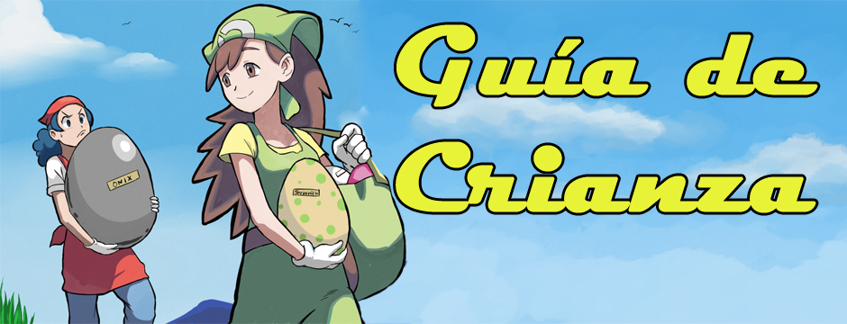
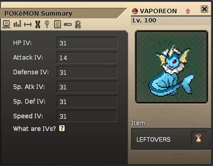
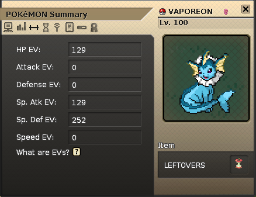
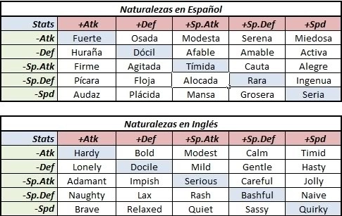
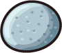
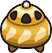

Guía de Crianza en construcción
La crianza en Pokemmo es un sisema donde te permite manipular los IV's de tus pokemon y darte una ventaja contra los npc's y tener presencia en batallas pvp. Criar pokemon implica una buena cantidad de dinero y tiempo, por lo que tambien es utilizado para conseguir dinero en grandes cantidades por medio de la venta de pokémon competitivos.
Con esta guia esperamos que te ayude a progresar como entrenador pokémon.
IV´s EV's y Naturalezas
IV's
Los IV's son los valores geneticos con los que nace un pokémon que varían entre 0 y 31 este ultimo siendo el valor perfecto y deseado en el aspecto competitivo. Los IV's determinan el potencial de un pokémon, ya sea PS (Puntos de Salud), Ataque, Defensa, Ataque Especial, Defensa Especial y velocidad.
De igual manera determinan el Poder oculto, que es un ataque especial que varía de tipo dependiendo de los IV's. Esto les permite a los pokémon tener ataques de tipos que normalmente no podrian aprender.
EV's
Effort Values o valores de esfuerzo son puntos agregados a los stats de tu pokémon. Los EV's son el entrenamiento que le das a tu pokémon por medio de vitaminas o peleando con npc's y pokémon salvajes.
Tocaremos este tema más a fondo en la Guía competitiva.
Naturalezas
Es el caracter de un pokémon que le brinda +10% en un stat y -10% en otro. Esto es importante porque naturalezas favorables le da ventaja a tu pokémon en el stat deseado.
Donde criar
Existen dos guarderias actualmente en el juego donde puedes criar tus pokémon. En Hoenn, la guarderia se encuentra al oeste de la Ciudad Malvalona en la ruta 117. En Kanto, la guarderia se encuentra en Isla 4 y solo es desponible después de haber ganado la Liga Pokémon y completado tus aventuras en las Islas 1-3.
Como criar y conceptos basicos
Objetos para criar
Existen multitud de objetos utiles en la crianza. Los más notorios son los brazales y las piedras eternas, que ayudan a garantizar Iv's y naturalezas respectivamente.
Los brazales son vendidos por una NPC dentro de la guarderia por 10k cada uno. Existe un brazal por cada Stat y deben ser sostenidos por los padres para garantizar heredarlos a la cria. Tambien podemos encontrar Pildoras de Habilidad. Es un item consumible que permite cambiar la habilidad del pokémon.
Existen otros items para criar pokémon bebes y movimientos especiales, pero lo que más se utiliza son los brazales y piedra eternas.
| Nombre | Descripcion | Objeto |
|---|---|---|
| Piedra Eterna | Garantiza pasar la naturaleza de un pokémon. |  |
| Incienso Suave | Para criar un Wynautt. |  |
| Incienso Marino | Para criar un Azurill. | |
| Bola luminosa | Para criar un pichu con el movimiento "Tacleada Voltio". |
Como funciona
- Para criar un pokemón es necesario contar con dos pokémon: uno macho y hembra que compartan el mismo grupo huevo. Hay excepciones pero las veremos más adelante.
- Los pokémon no se te regresarán. El Anciando de la guarderia solo te regresará el pokémon cria.
- La cria siempre será de la misma especie que la madre (pokémon hembra).
- El pokémon macho pasa movimientos huevo. La madre pasa movimientos huevo previamente aprendidos a la cria si el macho no tiene movimientos huevo que heredar.
- Puedes elegir el género de la cria por un precio al momento de recibir el huevo.
Al momento entregarle nuestros pokémon al Anciano de la guarderia, nos sale una ventana que muestra a los extremos la información de Iv's, naturalezas, movimientos, Entrenador Original y objetos sostenidos por nuestros pokémon.
Al centro, muestra al pokémon resultante de la cruza. El texto en verde simbolizan atributos que se pasaran a la cria. Los Iv's en cada stat tienen una posibilidad de salir exactamente como los Iv's del padre, madre o un promedio de ambos.
Combinar IV's sin naturaleza
Tomando en cuanto como funciona la crianza, a continuación se mustra una lista de como conseguir pokémon 1x31 hasta 6x31.
1x31
Para poder tener un pokémon con 31 en un solo IV es simple: Capturalo.
Los pokémon 1x31 solo pueden encontrarse salvajes y son la base para crear un pokémon competitivo.
2x31
Para obtener un 2x31 debes cruzar DOS POKÉMON 1x31 que tengan 31 en IV's distintos. Debes darle los brazales indicados a los padres para pasar los IV's.
En la imagen, para pasar PS y Ataque, al padre, que tiene 31 en Ps, se le da el brazal de PS y a la madre, que tiene 31 en ataque, se le da el brazal de ataque.
3x31
Para criar un 3x31 debes cruzar DOS POKÉMON 2x31 que tengan un IV 31 en común y dos IV 31 diferentes
En la imagen, los padres tienen 31 PS como IV en común. 31 Defensa en el padre y 31 en ataque en la madre son diferentes, por lo cual les daremos los brazales adecuados para pasarlos a la cria.
4x31
Para criar un 4x31 debes cruzar DOS POKÉMON 3x31 que tengan DOS IV's en común
En la imagen, los padres tienen PS y Defensa como stat en común. Ataque y Defensa especial son diferentes, por lo cual les damos los brazales indicados para heredarlos a la cria.
5x31
Para criar un 5x31 debes cruzar DOS POKÉMON 4x31 que tengan TRES IV's en común.
En la imagen, observamos que los padres tienen PS, Defensa y Defensa Especial en común. Velocidad y ataque son diferentes, por lo tanto les daremos los brazales indicados para heredarlos a la cria.
6x31
Para criar un 6x31 debes cruzar DOS POKÉMON 5x31 que tengan CUATRO IV's en común.
En la imagen, los padres tienen PS, Defensa, Defensa Especial y Velocidad en común. Ataque y Ataque especial son diferentes, por lo cual les daremos los brazales indicados para heredarlos a la cria
 2x31
2x31Combinar IV's CON NATURALEZA
Ya que sabes como criar pokémon x31, ahora te enseñaremos como criar un pokémon con naturaleza favorable.
1x31 con Naturaleza
Para poder tener un pokémon con 31 y naturaleza debes cruzar un pokémon 1x31 y un pokémon con la naturaleza deseada. Un pokémon debe sostener el brazal indicado y el pokémon con la naturaleza deseada debe sostener una piedra eterna.
2x31 con Naturaleza
Para obtener un 2x31 con naturaleza debes cruzar UN POKÉMON 2x31 y UN POKÉMON 1x31+Naturaleza que tengan un IV en común. Debes darle el brazal indicado al 2x31 y la Piedra eterna al 1x31+Naturaleza.
En la imagen, los padres tiene ataque como IV común. Se le da un brazal de ataque al padre y una piedra eterna a la madre ya que ella tiene la naturaleza que deseamos.
3x31 con Naturaleza
Para obtener un 3x31 con naturaleza debes cruzar UN POKÉMON 3x31 y UN POKÉMON 2x31+Naturaleza que tengan DOS IV's en común. Debes darle el brazal indicado al 3x31 y la Piedra eterna al 2x31+Naturaleza.
En la imagen, los padres tiene PS y ataque como IV's en común. Se le da un brazal de defensa al padre y una piedra eterna a la madre ya que ella tiene la naturaleza que deseamos.
4x31 con Naturaleza
Para obtener un 4x31 con naturaleza debes cruzar UN POKÉMON 4x31 y UN POKÉMON 3x31+Naturaleza que tengan TRES IV's en común. Debes darle el brazal indicado al 4x31 y la Piedra eterna al 3x31+Naturaleza.
En la imagen, los padres tiene PS, ataque y defensa como IV's en común. Se le da un brazal de defensa especial al padre y una piedra eterna a la madre ya que ella tiene la naturaleza que deseamos.
Si buscas ahorrar dinero, usualmente pokémon defensivos son viables con 4x31+Naturaleza.
5x31 con Naturaleza
Para obtener un 5x31 con naturaleza debes cruzar UN POKÉMON 5x31 y UN POKÉMON 4x31+Naturaleza que tengan CUATRO IV's en común. Debes darle el brazal indicado al 5x31 y la Piedra eterna al 4x31+Naturaleza.
En la imagen, los padres tiene PS, ataque, defensa y defensa especial como IV's en común. Se le da un brazal de velocidad al padre y una piedra eterna a la madre ya que ella tiene la naturaleza que deseamos.
Hasta este punto, 5x31+Naturaleza es suficiente para pokémon atacantes.
6x31 con Naturaleza
Para obtener un 6x31 con naturaleza debes cruzar UN POKÉMON 6x31 y UN POKÉMON 5x31+Naturaleza que tengan CINCO IV's en común. Debes darle el brazal indicado al 6x31 y la Piedra eterna al 5x31+Naturaleza.
En la imagen, los padres tiene PS, ataque, defensa, defensa especial y velocidad como IV's en común. Se le da un brazal de ataque especial al padre y una piedra eterna a la madre ya que ella tiene la naturaleza que deseamos.
Esta es la cria más cara de conseguir. Tener 6x31+Naturaleza es recomendado para pokémon atacantes mixtos.